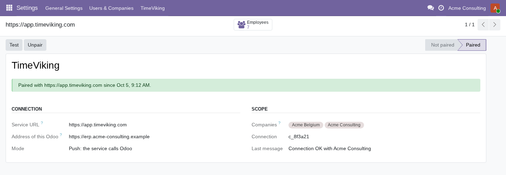

What the module does in Odoo
- No API key to manage: paste a pairing code and you are connected.
- You decide the scope: choose the companies, allow or block each employee.
- Only what is needed: read projects, tasks and employees; write timesheet lines for allowed employees. No generic access to your database.
- Signed requests (HMAC-SHA256 with timestamp and nonce) in both directions.
- Time Off (optional): schedules, public holidays, allocations, balances and requests. Approving and refusing stay in Odoo.
- Invoiced or validated lines are respected: the service never forces a change on them.
- Unpair at any time from the same screen.


Linked employees
See who is linked to which Odoo employee, and switch someone off with one click.